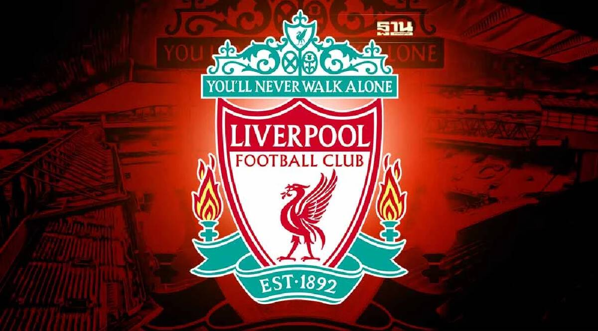

สโมสรฟุตบอลลิเวอร์พูล (อังกฤษ: Liverpool Football Club) เป็นสโมสรฟุตบอลอาชีพที่อยู่ในเมืองลิเวอร์พูล ประเทศอังกฤษ แข่งขันอยู่ในพรีเมียร์ลีก ลีกสูงสุดของฟุตบอลอังกฤษ สโมสรก่อตั้งใน ค.ศ. 1892 ได้เข้าร่วมแข่งขันฟุตบอลลีกในปีต่อมาและใช้สนามแอนฟีลด์เป็นสนามเหย้าตั้งแต่ก่อตั้งสโมสร
สำหรับการแข่งขันภายในประเทศ ลิเวอร์พูลชนะเลิศลีกสูงสุด 19 สมัย, เอฟเอคัพ 8 สมัย, ลีกคัพ 9 สมัย (สถิติสูงสุด) และเอฟเอคอมมิวนิตีชีลด์ 16 สมัย ส่วนการแข่งขันระดับนานาชาติ ลิเวอร์พูลชนะเลิศยูฟ่าแชมเปียนส์ลีก 6 สมัย, ยูฟ่าคัพ 3 สมัย, ยูฟ่าซูเปอร์คัพ 4 สมัย (ทั้งสามรายการเป็นสถิติสูงสุดของสโมสรอังกฤษ) และฟีฟ่าคลับเวิลด์คัพ 1 สมัย ช่วงเวลาที่ประสบความสำเร็จมากที่สุดในประวัติศาสตร์คือช่วงคริสต์ทศวรรษ 1970 และคริสต์ทศวรรษ 1980 เมื่อบิลล์ แชงคลี, บ๊อบ เพสลีย์, โจ เฟแกนและเคนนี แดลกลีช พาทีมชนะเลิศลีกสูงสุด 11 สมัยและยูโรเปียนคัพ 4 ใบ ต่อมาลิเวอร์พูลชนะเลิศการแข่งขันยูฟ่าแชมเปียนลีกอีก 2 สมัย ภายใต้การคุมทีมของราฟาเอล เบนิเตซและเยือร์เกิน คล็อพตามลำดับ ซึ่งคล็อพสามารถนำทีมชนะเลิศลีกสูงสุดใน ค.ศ. 2020 นับเป็นการชนะเลิศลีกสูงสุดสมัยที่ 19 และสมัยแรกของยุคพรีเมียร์ลีก
ลิเวอร์พูลเป็นหนึ่งในสโมสรที่มีผู้สนับสนุนมากที่สุดในโลกและเป็นหนึ่งในสโมสรฟุตบอลที่มีมูลค่ามากที่สุดในโลก ลิเวอร์พูลมีสโมสรคู่แข่งซึ่งแข่งขันด้วยกันมาอย่างยาวนาน ได้แก่ แมนเชสเตอร์ยูไนเต็ดและเอฟเวอร์ตัน ลิเวอร์พูลใช้เสื้อสีแดงและกางเกงขาสั้นสีขาวเป็นชุดแข่งขันมาตั้งแต่ ค.ศ. 1896 ก่อนจะเปลี่ยนเป็นสีแดงเต็มตัวเมื่อเล่นเป็นทีมเหย้าตั้งแต่ ค.ศ. 1964 เป็นต้นมา ฉายาในภาษาอังกฤษของลิเวอร์พูลคือ "เดอะเรดส์" (The Reds) ส่วนฉายาที่ชาวไทยนิยมเรียกคือ "หงส์แดง" ลิเวอร์พูลมีเพลงประจำสโมสรคือ "ยูลล์เนฟเวอร์วอล์กอะโลน" (You'll Never Walk Alone)
แฟนบอลของสโมสรได้เข้าไปเกี่ยวข้องกับโศกนาฏกรรมที่สำคัญ 2 ครั้ง ได้แก่ ภัยพิบัติสนามกีฬาเฮย์เซลที่กำแพงพังลงมาทับแฟนบอลในนัดชิงชนะเลิศยูโรเปียนคัพ 1985 ที่บรัสเซลส์ ทำให้มีผู้เสียชีวิต 39 คน โดยส่วนใหญ่เป็นชาวอิตาลีและผู้สนับสนุนยูเวนตุส หลังจากนั้นยูฟ่าได้ระงับสิทธิ์เข้าร่วมการแข่งขันฟุตบอลยุโรปของสโมสรจากอังกฤษเป็นระยะเวลา 5 ปี และภัยพิบัติฮิลส์โบโรใน ค.ศ. 1989 เมื่อแฟนบอลของลิเวอร์พูล 97 คนเสียชีวิตจากการถูกบีบอัดติดกับรั้วที่กั้นสนาม นำไปสู่การยกเลิกรั้วกันสนามบริเวณที่ยืน โดยกำหนดให้สนามกีฬาของสโมสรในลีกสองระดับแรกของฟุตบอลอังกฤษต้องเป็นแบบมีที่นั่งทั้งหมด การรณรงค์เพื่อความยุติธรรมเป็นเวลานานทำให้มีการสอบสวนของเจ้าหน้าที่ชันสูตรศพ คณะกรรมการและคณะกรรมการอิสระเพิ่มเติมซึ่งทำให้ผู้สนับสนุนพ้นผิดในท้ายที่สุด
